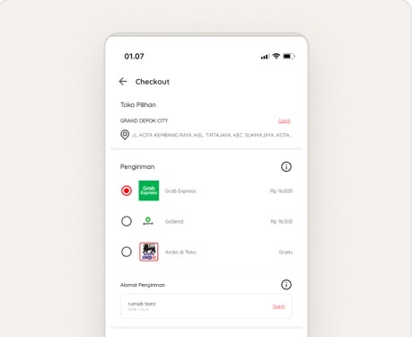

01Pickup or delivery only becomes clear at checkout
Mums can’t choose up front whether to pick up or get it delivered. At checkout, pickup sits next to third-party couriers, so many expect the supermarket itself to deliver. “I’d like it to be sent by the supermarket.” (participant, translated)
Design implication: show the store on Home, Cart and Checkout, and separate pickup from courier delivery.